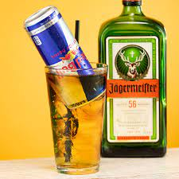

Mince & Rice

Description
This dish will set your mouth alive with flavours that combine all
the attributes of the ingridents used just like the prevoius two dishes.Except in
liquid form.The Jager-Bomb is truley a timeless classic that can be enjoyed by partying youth
or with some class at a dinner event .
Ingridents
- Jagermeister
- Redbull or Green V
Instructions
- Add a shot (or 2) of jagermeister into a tall glass
- Pour in beverage of choice to your desired strengeth
- Add a straw and mix for slow drink
- For a "getting turnt scenario" skull like there is no tomorrow
- Rinse and repeat